Module 7: Phylodynamics and Transmission Dynamics
Lab
1. Introduction
In this tutorial we will be using phylogenetics and metadata to try and better understand the underlying evolutionary, ecological, and epidemiological processes of the SARS-CoV-2 pathogen. This is a field of study and methodology known as phylodynamics.
We will be focusing on 3 types of analysis using a dataset derived from the following study which found evidence of SARS-CoV-2 spilling over from human infections into wildlife, evolving within wildlife, and then infecting a human:
Published Paper
Pickering, B., Lung, O., Maguire*, F., et al. Divergent SARS-CoV-2 variant emerges in white-tailed deer with deer-to-human transmission Nat Microbiol 7, 2011-2024 (2022). https://doi.org/10.1038/s41564-022-01268-9
These analyses are:
- Inferring a molecular clock model to estimate when deer were infected with a specific SARS-CoV-2 lineage
- Ancestral state reconstruction to identify where this took place
- Inference of episodic selection related to this zoonoses
Now the big caveat here is that a lot of these analyses (including some of the more classic epidemiological parameter estimation phylodynamics) are typically done using a Bayesian framework such as BEAST. However, these can be quite challenging to run from a logistics perspective in the context of a practical. To this end, we are instead going to focus on the more “quick and dirty” maximum likelihood approaches using tools designed more for the scale of SARS-CoV-2 genomics data.
If you are interested in phylodynamics more deeply, I recommend checking out some of the semi-regularly held “Taming the BEAST” workshops and the tutorials shared by the BEAST Developers. Paul Lewis’ phyloseminar.org lectures on Bayesian phylogenetics (part 1 and part 2) are also an excellent place to start to learn the basic theory of Bayesian methods.
3. Exercise Setup
3.1. Copy Data Files
To begin, we will copy over the necesssary files to ~/workspace.
Commands
cp -r ~/CourseData/IDE_data/module8/ ~/workspace
cd ~/workspace/module8When you are finished with these steps you should be inside the directory /home/ubuntu/workspace/module8. You can verify this by running the command pwd.
Output after running pwd
/home/ubuntu/workspace/module8You should also see a directory data/ in the current directory which contains all the input data. You can verify this by running ls data:
Output after running ls data
sequences.fasta metadata.tsv reference_MN908947.3.fasta S.xml3.2. Activate Environment
Next we will activate the conda environment, which will have all the tools needed by this tutorial pre-installed. To do this please run the following:
Commands
conda activate signalcovtoolsYou should see the command-prompt (where you type commands) switch to include (signalcovtools) at the beginning, showing you are inside this environment. You should also be able to run the augur command like augur --version and see output:
Output after running augur --version
augur 24.3.03.3. Find your IP Address
Similar to yesterday, we will want to either use the assigned hostname (e.g., xx.uhn-hpc.ca where xx is your instance number) or find the IP address of your machine on AWS so we can access some files from your machine on the web browser. To find your IP address you can run:
Commands
curl http://checkip.amazonaws.comThis should print a number like XX.XX.XX.XX. Once you have your address, try going to http://xx.uhn-hpc.ca or http://IP-ADDRESS and clicking the link for module8. This page will be referred to later to view some of our output files. In addition, the link precomputed-analysis will contain all the files we will generate during this lab (phylogenetic trees, etc).
4. Phylodynamics Analysis
The overall goal of this lab is to make use of a set of SARS-CoV-2 genomes sequenced and analyzed in the above study and then use associated metadata and phylodynamic methods to gain insight into where and when the zoonoses most likely occurred (and their evolutionary impact). To do this, we will mostly make use of the Augur tool suite, which powers the NextStrain website. Within augur, the key tool actually being used for most of our inferences is TreeTime a likelihood based tool for inferring molecular clocks and ancestral traits.
An overview of the basic usage of Augur (figure from the Augur documentation):
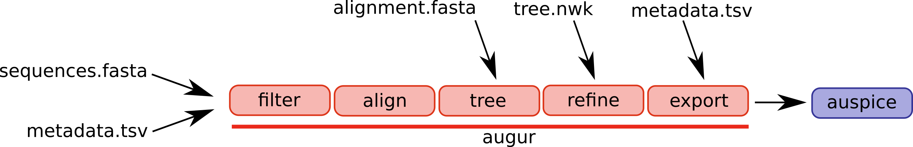
The steps/functions we use are in this lab are the following:
- align: This step constructs a multiple sequence alignment from this subset of genomes
- tree: This step builds a phylogenetic tree, where branch lengths are measured in substitutions/site (a divergence tree)
- refine: This step constructs a time tree using our existing tree alongside collection dates of SARS-CoV-2 genomic samples (branch lengths are measured in time)
- traits: This step uses treetime’s mugration model to infer ancestral traits based on the tree. We will use this to infer ancestral host and geography
- export: This step exports the data to be used by Auspice, a version of the visualization system used by NextStrain that lets you examine your own phylogenetic tree and metadata
Once these steps are completed, we will spend some time comparing the phylogenetic tree and epidemiological metadata to the results published in the existing study.
Step 1: Construct a Multiple Sequence Alignment of the Genomes (augur align)
The first step is to construct a multiple sequence alignment of the genomes, which is required before building a phylogenetic tree. We will be using the command augur align to accomplish this task, but underneath this runs mafft to construct the alignment.
To construct the alignment, please run the following:
Commands
# Time: 10 seconds
augur align --nthreads 2 --sequences data/sequences.fasta --reference-sequence data/reference_MN908947.3.fasta --output alignment.fastaYou should expect to see the following:
Output
using mafft to align via:
mafft --reorder --anysymbol --nomemsave --adjustdirection --thread 2 alignment.to_align.fasta 1> alignmnt.fasta 2> alignment.fasta.log
Katoh et al, Nucleic Acid Research, vol 30, issue 14
https://doi.org/10.1093%r%2Fgkf436
12bp insertion at ref position 6377
TGCGTGCGTCGG: hCoV-19/mink/USA/MI-CDC-3886779-001/2020, hCoV-19/mink/USA/MI-CDC-3886954-001/2020, hCoV-19/mink/USA/MI-CDC-3886891-001/2020, hCoV-19/mink/USA/MI-CDC-3886516-001/2020, hCoV-19/Canada/ON-PHL-21-44225/2021, hCoV-19/deer/Canada/ON-WTD-04581-2582/2021, hCoV-19/deer/Canada/ON-WTD-04658-2372/2021, hCoV-19/deer/Canada/ON-WTD-wcov-04662-2575/2021
Trimmed gaps in MN908947.3 from the alignmentThe meaning of each parameter:
--nthreads 2: Use 2 threads for the alignment.--sequences data/sequences.fasta: The input set of sequences in FASTA format.--output alignment.fasta: The output alignment, in FASTA format.--reference-sequence data/reference_MN908947.3.fasta: The reference genome (the Wuhan-Hu 1 genome). This will be included in our alignment andaugur alignwill, once the alignment is constructed, remove any insertions with respect to this reference genome (useful when identifying and naming specific mutations later on in the augur pipeline).
Once the alignment is complete, you should have a file alignment.fasta in your directory. This is a very similar format as the input file sequences.fasta, but the difference is that sequences have been aligned (possibly by inserting gaps -). This also means that all sequences in alignment.fasta should have the same length (whereas sequences in sequences.fasta, which is not aligned, may have different lengths).
Step 2: Build a Maximum Liklihood Phylogenetic Tree (augur tree)
The next step is to take the set of aligned genomes alignment.fasta and build a phylogenetic tree (a divergence tree). We will use augur tree for this, but underneath it (by default) runs iqtree, which uses the Maximum Likelihood method (discussed in Module 2) to infer a phylogenetic tree. To build a tree, please run the following:
Commands
# Time: 15 seconds
augur tree --nthreads 4 --alignment alignment.fasta --output tree.subs.nwkYou should expect to see this (or very similar) output:
Output
Building a tree via:
iqtree2 -ntmax 4 -s alignment-delim.fasta -m GTR -ninit 2 -n 2 -me 0.05 -nt AUTO -redo > alignment-delim.iqtree.log
Nguyen et al: IQ-TREE: A fast and effective stochastic algorithm for estimating maximum likelihood phylogenies.
Mol. Biol. Evol., 32:268-274. https://doi.org/10.1093/molbev/msu300
Building original tree took 11.159646034240723 secondsThis produces as output a tree.subs.nwk file, which is the actual phylogenetic tree (in Newick format). You can load this file in a variety of phylogenetic tree viewers (such as http://phylo.io/) but we will further refine this file to work with Auspice.
Another output file is alignment-delim.iqtree.log, which contains additional information from iqtree. You can take a look at this file to get an idea of what iqtree was doing by using tail (prints the last few lines of a file).
Commands
tail -n 20 alignment-delim.fasta.logOutput
Optimal log-likelihood: -42013.225
Rate parameters: A-C: 0.16166 A-G: 0.97768 A-T: 0.06332 C-G: 0.00010 C-T: 6.44146 G-T: 1.00000
Base frequencies: A: 0.299 C: 0.183 G: 0.197 T: 0.322
Parameters optimization took 1 rounds (0.006 sec)
BEST SCORE FOUND : -42013.225
Total tree length: 0.006
Total number of iterations: 2
CPU time used for tree search: 0.083 sec (0h:0m:0s)
Wall-clock time used for tree search: 0.043 sec (0h:0m:0s)
Total CPU time used: 20.087 sec (0h:0m:20s)
Total wall-clock time used: 11.073 sec (0h:0m:11s)
Analysis results written to:
IQ-TREE report: alignment-delim.fasta.iqtree
Maximum-likelihood tree: alignment-delim.fasta.treefile
Likelihood distances: alignment-delim.fasta.mldist
Screen log file: alignment-delim.fasta.logAs iqtree uses a Maximum Likelihood approach, you will see that it will report the likeihood score of the optimal tree (reported as log-likehoods since likelihood values are very very small).
Note
For this lab we are not looking at branch support values for a tree, but for real-world analysis you may wish to look into including bootstrap support values or approximate likelihood ratio test values. This will give a measure of how well supported each branch in the tree is by the alignment (often a number from 0 for little support to 100 for maximal support). Please see the IQTree documentation for more details.
Step 3: Inferring Timing of Host Change (augur refine)
The tree output by iqtree shows hypothetical evolutionary relationships between different SARS-CoV-2 genomes with branch lengths representing distances between different genomes (in units of substitutions/site i.e., the predicted number of substitutions between genomes divided by the alignment length). However, other methods of measuring distance between genomes are possible. In particular we can incorporate the collection dates of the different SARS-CoV-2 genomes to infer a tree where branches are scaled according to the elapsed time and the dates of internal nodes are inferred. Such trees are called time trees.
We will use TreeTime to infer a time tree from our phylogenetic tree using collection dates of the SARS-CoV-2 genomes stored in the metadata.tsv metadata file. We will use the augur refine step to run TreeTime and perform some additional refinemint of the tree. To do this, please run the following:
Commands
# Time: 5 minutes
augur refine --alignment alignment.fasta --tree tree.subs.nwk --metadata data/metadata.tsv --timetree --divergence-units
mutations --output-tree tree.time.nwk --output-node-data refine.node.json --keep-rootYou should expect to see the following as output:
Output
augur refine is using TreeTime version 0.9.4
21.73 WARNING: Previous versions of TreeTime (<0.7.0) RECONSTRUCTED sequences of
tips at positions with AMBIGUOUS bases. This resulted in unexpected
behavior is some cases and is no longer done by default. If you want to
replace those ambiguous sites with their most likely state, rerun with
`reconstruct_tip_states=True` or `--reconstruct-tip-states`.
[...]
Inferred a time resolved phylogeny using TreeTime:
Sagulenko et al. TreeTime: Maximum-likelihood phylodynamic analysis
Virus Evolution, vol 4, https://academic.oup.com/ve/article/4/1/vex042/4794731
updated tree written to tree.time.nwk
node attributes written to refine.node.jsonThe parameters we used are:
--alignment alignment.fasta: The alignment used to build the tree. Used to re-scale the divergence units.- –tree tree.subs.nwk: The input tree build using iqtree.
- –metadata data/metadata.tsv: The metadata which contains the SARS-CoV-2 genome names (in a column called strain) and the sample collection dates (in a column named date).
- –timetree: Build a time tree.
- –divergence-units mutations: Convert the branch lengths of substitutions/site (mutations/site) to mutations (not needed to build a time tree, this is just used for visualizing the tree later on).
- –output-tree tree.time.nwk: The output Newick file containing the time tree.
- –output-node-data refine.node.json: Augur will store additional information here which will let us convert between time trees and substitution trees.
- –keep-root: Keep the reference genome as the root
As output, the file tree.time.nwk will contain the time tree while the file refine.node.json contains additional information about the tree. The tree tree.time.nwk will also be rooted based on analysis performed by TreeTime.
Step 4: Infer Ancestral States for Host and Location
We will now be using treetime’s mugration model to reconstruct ancestral trait states. In other words, we are trying to use the tree and genome metadata to reconstruct the most likely host and location (the state/province stored as division in data/metadata.tsv) at each of the internal nodes in the tree. As with the other analyses, augur makes this process very convenient:
Commands
# Time: 1 minute
augur traits --tree tree.time.nwk --metadata data/metadata.tsv --columns host division --output-node-data trait.node.jsonYou should expect to see the following as output:
Output
augur traits is using TreeTime version 0.9.4
Assigned discrete traits to 31 out of 35 taxa.
NOTE: previous versions (<0.7.0) of this command made a 'short-branch
length assumption. TreeTime now optimizes the overall rate numerically
and thus allows for long branches along which multiple changes
accumulated. This is expected to affect estimates of the overall rate
while leaving the relative rates mostly unchanged.
Assigned discrete traits to 31 out of 35 taxa.
[...]
Inferred ancestral states of discrete character using TreeTime:
Sagulenko et al. TreeTime: Maximum-likelihood phylodynamic analysis
Virus Evolution, vol 4, https://academic.oup.com/ve/article/4/1/vex042/4794731
results written to trait.node.jsonThe parameters we used are:
--tree tree.time.nwk: The time-calibrated tree we inferred in step 4--metadata data/metadata.tsv: The metadata file with information about the genomes in the tree--columns host division: The columns in the metadata file we want to infer ancestral states for, in this case host (what species the genome came from) and division (the province/state the genome came from).--output-node-data trait.node.json: Augur stores the additional information related to the ancestral trait inference for later visualisation.
Step 5: Package up data for Auspice Visualisation (augur export)
We will be using Auspice to visualize the tree alongside our metadata. To do this, we need to package up all of the data we have so far into a special file which can be used by Auspice. To do this, please run the following command:
Commands
# Time: 1 second
augur export v2 --tree tree.time.nwk --node-data refine.node.json trait.node.json --maintainers "CBW-IDE-2024" --title "Module 8 Practical" --output analysis-package.json --geo-resolutions divisionYou should expect to see the following as output:
Output
Trait 'host' was guessed as being type 'categorical'. Use a 'config' file if you'd like to set this yourself.
Trait 'division' was guessed as being type 'categorical'. Use a 'config' file if you'd like to set this yourself.
Validating produced JSON
Validating schema of 'analysis-package.json'...
Validating that the JSON is internally consistent...
Validation of 'analysis-package.json' succeeded.The file analysis-package.json contains the tree with different branch length units (time and sustitutions), our inferred ancestral traits, as well as additional data.
The parameters we used are:
--tree tree.time.nwk: The time-calibrated tree we inferred in step 4--node-data refine.node.json trait.node.json: The 2 jsons created during the temporal and ancestral trait inference--title "Module 8 Practical": A title for the auspice page, you can make this anything you want.- -
-maintainers "CBW-IDE-2024": A name for who is responsible for this analysis, useful for later, can make this anything you want. --geo-resolutions division: Spatial resolution on which to plot the data. In this case we want province/state i.e., division--output analysis-package.json: The key output file we want to generate
5. Visualizing the Phylodynamic Analysis Alongside Epidemiological Metadata
Now that we’ve constructed and packaged up a tree (analysis-package.json), we can visualize this data alongside the data augur has we’ve extracted from our metadata using augur (data/metadata.tsv) using Auspice.
Note
I’ve had issues recently getting this to work in firefox so recommend using a chromium-based browser if you have issues.
Step 1: Load Data into Auspice
To do this, please navigate to http://IP-ADDRESS/module8/ and download the files analysis-package.json and data/metadata.tsv to your computer (if the link does not download you can Right-click and select Save link as…).
Next, navigate to https://auspice.us/ and drag the file analysis-package.json onto the page.
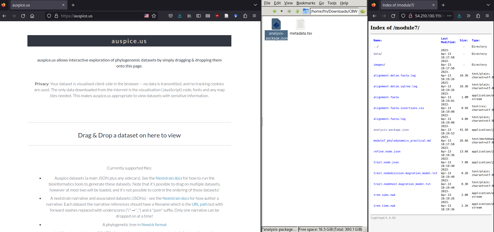
This should result in a phylogenetic tree being loaded that looks like:
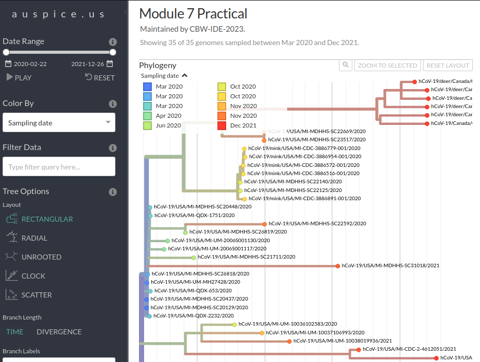
Next, we will load the metadata data/metadata.tsv file onto this view. To do this, please find and drag-and-drop the data/metadata.tsv file onto the phylogenetic tree shown in Auspice:
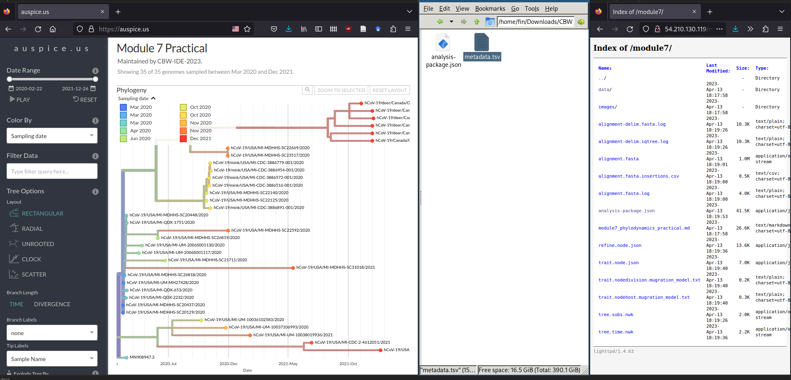
You may get some warning messages showing up, but you should still see a green Added metadata from metadata.tsv message.
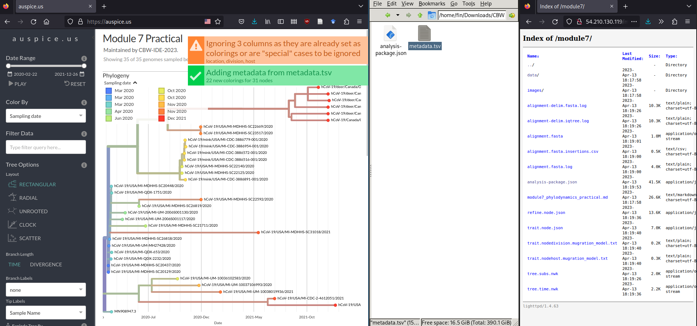
Step 2: Explore Data
Now you can spend some time to explore the data and get used to the Auspice interface. Try switching between different Tree Layouts, or different Branch Lengths, or colouring the tree by different criteria in the metadata table. This is always worth doing a bit before diving into analyses!
Step 3: Examine the Molecular Clock Analysis
Now we are going to look more at the Branch length “TIME” and “DIVERGENCE” options as well as the “CLOCK” layout/figure found in the options bar on the left of your screen.
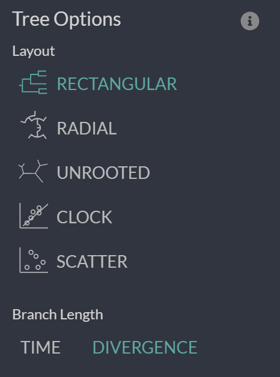
First, let’s look at the divergence tree and use the x-axis to work out how many mutations there are on certain branches. We can use the x-axis in the “RECTANGULAR” layout of the “DIVERGENCE” tree to work this out or we can directly move our cursor over the node/branch of interest to have a pop-up with the details.
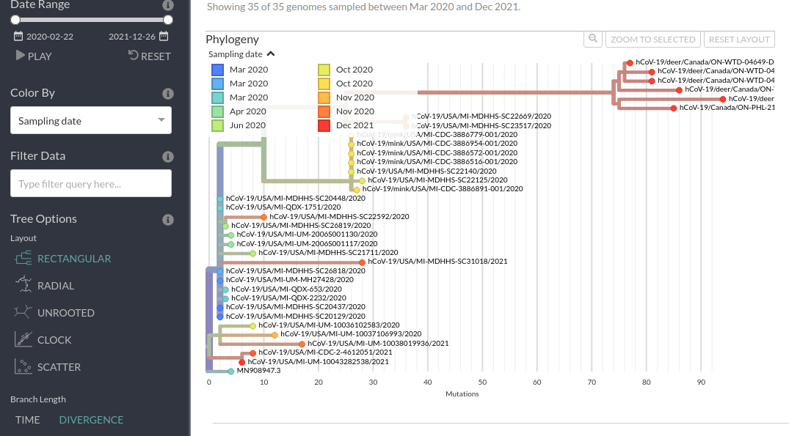
Now, we can do the same thing if we switch to “TIME” and look at the approximate inferred dates of the internal nodes of the tree. We can also mouse over to get the exact pop-up dates.
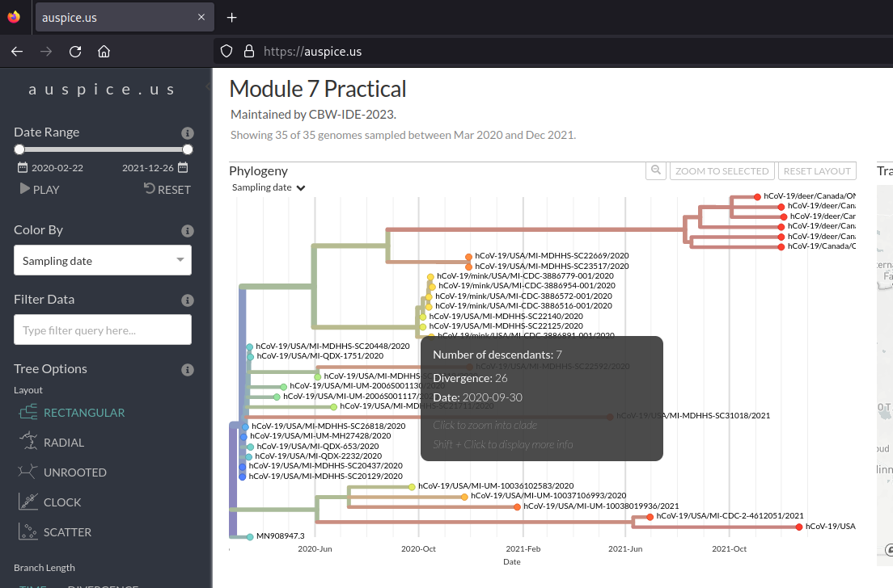
Finally, we can look at the tip-to-root regression from the divergence tree (i.e., how long each genome’s total branch length in mutations is all the way to root vs the collection date). This can be done by selecting “DIVERGENCE” under the “Branch Length” header.
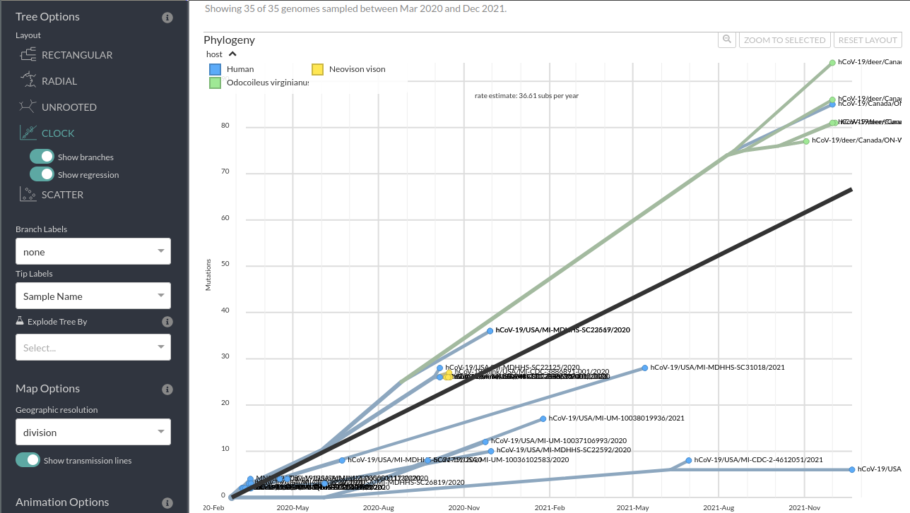
Step 3: Questions
- When was the last common ancestor of the ON Deer clade?
- What about the last common ancestor of this clade and the nearest other sequences?
- Does the trend line for the molecular clock (tip-to-root regression) look a good fit? Do you think there may be more than 1 mutation rate in these samples?
- Given the amount of data and your answer to 1, how accurate do you think the inferred node date is?
- How might you represent the degree of certainty or uncertainty in these estimates?
Step 4: Examine the Ancestral Trait Inference
We can colour the tree and rename the tree tip labels using the metadata to infer ancestral traits. The internal nodes/branches will be coloured based on the inferred ancestral state.
For example, you can look at the inferred ancestral host information using these options:
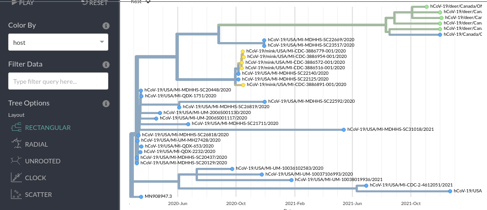
Similarly, you can look at the inferred ancestral location information using these options:
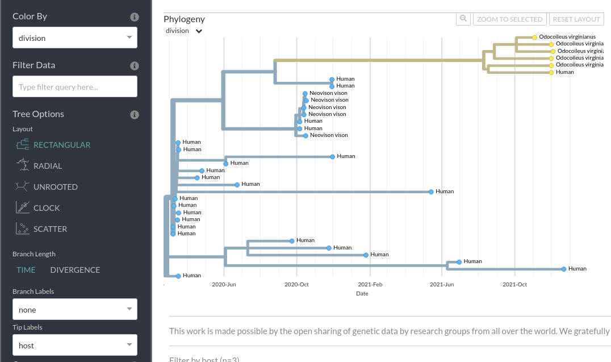
Step 4: Questions
- Based on this analysis was the common ancestor of the ON Deer+Human clade inferred to have been in a human or in a deer?
- What about the common ancestor of the wider ON Deer+Human, MI Mink+Human clades?
- Why might this analysis be misleading?
- Where is the ON Deer+Human clade inferred to have originated: Ontario or Michigan?
6. Selection Analysis
Now we are going to try and do a selection analysis. In particular, we are going to use some of the models in hyphy to determine whether the dN/dS (also known as ω) ratio (ratio of non-synonymous mutations per non-synonymous site to synonymous mutation per synonymous site) is significantly different in the ON Deer+Human clade than the rest of our dataset.
To do this we first need an alignment that captures information about dN/dS i.e., a codon alignment. To be honest, these are fairly irritating to generate. The classic tool PAL2NAL or hyphy’s own method needs us to have an alignment of a given gene (dN and dS only make sense for coding sequences) in both protein and nucleotide form. This can often require custom sequence manipulation and is sensitive to sequences with errors or unresolved regions.
For this exercise, we are going to generate a codon alignment for the S using a tool called virulign
Commands
# Time: 5 minutes
./code/virulign data/S.xml data/sequences.fasta --exportAlphabet Nucleotides --exportKind GlobalAlignment --exportReferenceSequence yes --progress yes > S_codon_alignment.fastaThen as you did previously, you want to download S_codon_alignment.fasta by navigating to http://IP-ADDRESS/module8/ (or using scp if you are familiar with it). Once you’ve got the codon alignment, we are going to go the datamonkey.org website. This is very useful webserver that is provided by the authors of hyphy to make it easier to use their methods. As you can see on the home page there is even a nice wizard that will guide you towards the correct model for the analysis you want to perform.
In this case we are interested in selection across branches of the episodic kind which will guide us towards a method called aBSREL (adaptive Branch-Site RandomEffects Likelihood).
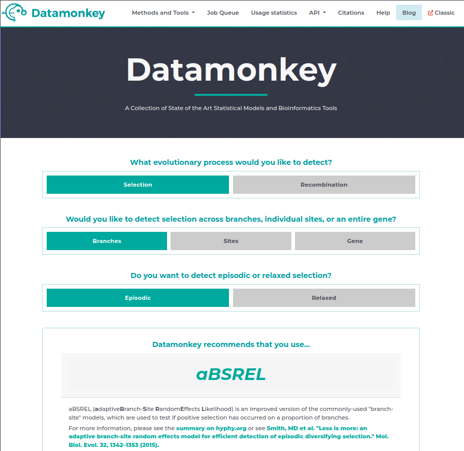
We are going to follow the instructions on the page and select our S_codon_alignment.fasta as input, enter our email address (just in case), then hit run analysis.
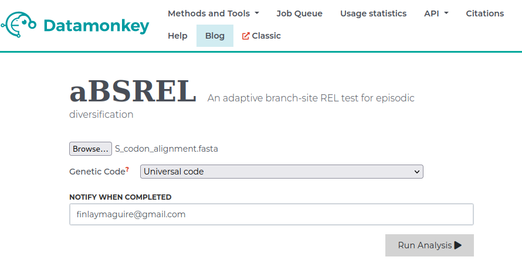
This will take us to a new page where we can select the branches we want to test for increased episodic selection relative to the rest of the tree. In this case we are interested in the ON Deer+Human clade so we will select those branches. Then we will hit Save Branch Selection and begin running our analysis.
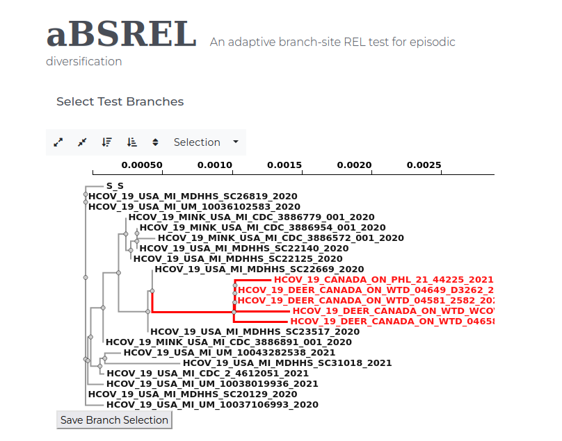
If all goes well this will run for a minute or two (depending on server load) before directing us to an nice results page with lots of details.
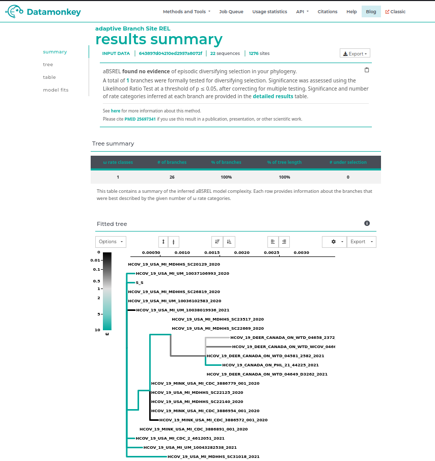
Questions
- At the top of the page there is a summary of the result, is there any sign of increased episodic selection in this clade?
- Look at the fitted tree output below, based on the colorbar in the legend for values of ω (dN/dS), is the inferred ω > 1 or < 1 in the branches leading up to the ON Deer+Human clade?
- What might this represent in terms of the differences between deer and human immune responses?
- Can you think of any limitations of this analysis?
Lab Completed!
Congratulations! You have completed Lab 7!